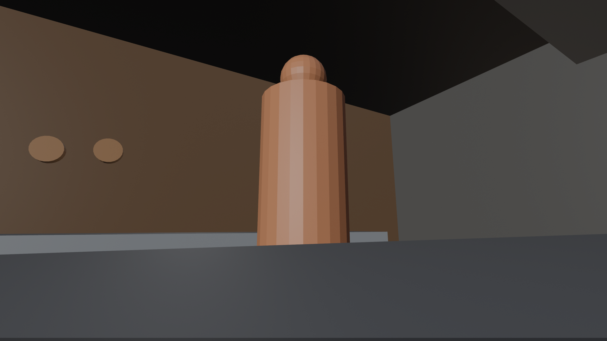

김작은 Blender에서 장소와 캐릭터의 3D 배치, 카메라 위치와 앵글, 회전 경로를 먼저 설계했다. 이 이미지와 영상을 AI 영상 생성의 컨텍스트로 사용해, 원하는 장면을 시각적으로 전달했다.
프롬프트에 카메라 용어를 적는 데서 나아가, 어떤 구도에서 어디를 바라보고 어떻게 움직일지를 먼저 정의했다.
CASE 01 — BEAT 02-1 · 정적인 구도 설계
16mm 로우 앵글, 카운터 높이의 카메라, 약 12도 상향 시선. 카운터를 화면 아래 전경에 두고 인물의 머리부터 허리까지 담으며 머리 위에는 어두운 천장이 보이도록 설계했다. 카메라는 고정하고 인물은 렌즈에서 약 40도 비스듬히 서는 구도다.

회색 더미와 박스는 인물과 공간의 위치 표시다. 실제 얼굴·의상은 강세진 캐릭터 시트, 레스토랑 재질·질감·색감은 별도 장소 이미지에서 가져오도록 지정했다.


장면을 대조한 결과, 위 영상은 머리를 포함한 로우 앵글, 카운터 전경, 앞치마를 들어 올렸다가 허리에 정리하는 동작이 BEAT 02-1 지시와 부합한다. 구도 가이드의 단순한 형태가 실제 인물과 주방의 외형으로 바뀐 것을 볼 수 있다.
자료 대조 · 원본 bit-02-1.md에는 결과 파일명이 미기록이다. beat2-3_4부감-2K.mp4는 파일명만이 아니라 장면을 대조해 연결했다. 정면 후보는 머리가 잘리는 구도로 이 사례와 구분된다. 16mm와 12도는 설계값이며, 생성 영상에서 측정한 값은 아니다.
CASE 02 — BEAT 06 · 제자리 360도 회전
카메라를 두 인물 사이 눈높이에 고정하고, 위치를 옮기지 않은 채 방향만 한 바퀴 돌리는 설계다. 처음 약 1초 정지 → 약 8초 회전 → 마지막 약 1초 정지를 요청했다.
각 플레이어로 따로 재생하거나 같은 시작점에서 비교할 수 있습니다.
| 구간 | 설계 의도 | 영상에서 확인한 결과 |
|---|---|---|
| 시작 | 서희를 바라보며 약 1초 정지 | 초반 서희 구도를 유지한다. 인물의 표정과 자세에는 움직임이 있다. |
| 중간 | 약 8초 동안 제자리에서 방향만 360도 회전 | 공간을 가로질러 약 4–5초에 베이스팅하는 강세진을 보여주고 다시 서희 쪽으로 이어진다. |
| 끝 | 시작 구도로 돌아와 약 1초 정지 | 약 8–9초에 서희로 돌아와 마무리한다. 시작과 끝의 인물 위치·프레이밍은 완전히 같지 않다. |
서희 → 강세진 → 서희라는 시각적 흐름은 구현됐다. 다만 생성 영상의 공간과 프레이밍은 프리비즈를 그대로 복제한 결과가 아니다. 카메라의 위치 고정, 정확한 360도 회전량, 일정한 각속도와 정지 구간이 초 단위로 일치한다고 영상만으로 확정할 수는 없다.
자료 대조 · bit-06.md의 결과 파일명은 미기록이다. beat6-2k.mp4의 약 10초 길이와 서희 → 베이스팅하는 강세진 → 서희 장면을 대조해 연결했다. 파일은 2562×1440 / 30fps이며, 프롬프트 요청인 2K / 24fps와 구분한다.
컨텍스트마다 맡긴 역할
| 입력 | 역할 | 확인한 자료 |
|---|---|---|
| Video 1 | 카메라 경로·회전 타이밍 | 위 Blender 프리비즈 영상 |
| Image 1 | 서희 얼굴·머리·의상 | Seohee_FrontBack_Paired77_OriginalPortrait_4K_v5.png |
| Image 2 | 강세진 얼굴·머리·의상 | KangSejin_LocalSmile_Original4K_v9.png |
| Image 3 | 서희 측 카운터·좌석·석재 벽 | Restaurant_01_FiveSeat_WalnutConsole_4K_v4.png |
| Image 4 | 셰프 측 타일 벽·구리 팬·스테인리스 | Restaurant_01_GuestView_UniformSatinTiles_4K_v8.png |
Video 1은 움직임 가이드이고 인물과 공간의 외형은 Image 1–4가 담당한다. 원문에서 언급하는 Image 5는 실제 파일이 확인되지 않아 연결하지 않았다.
대표 프롬프트 · 실제 영문 발췌
BEAT 06 원문에서 프리비즈의 역할과 카메라 움직임을 지정한 두 문단을 수정 없이 발췌했다.
Video 1 is a camera-motion guide only. Follow its camera path and timing exactly. Its grey boxes, colors and dummy figures are position markers only and must never appear in the result. All people, costumes, sets and props come from the images.
Scene: a single continuous shot. The camera stands between the two characters at eye level and spins 360 degrees in place, like a person turning on the spot. The camera is still for the first second, rotates smoothly and steadily for about 8 seconds, then is still for the last second. The camera never moves from its spot; only its direction turns. The woman sits on one side, the chef stands on the opposite side, and the camera sees each of them in turn.생성 전에 결정할 수 있는 것
이 접근은 원하는 구도와 움직임을 먼저 설계해 AI 영상 생성의 시행착오를 줄이려는 시도다. 김작이 가상의 카메라로 장면을 정의하고, 생성 결과를 다시 그 의도와 비교하며 판단했다. 실제 비용이나 시간을 얼마나 절감했는지는 측정 자료가 없어 수치로 주장하지 않는다.